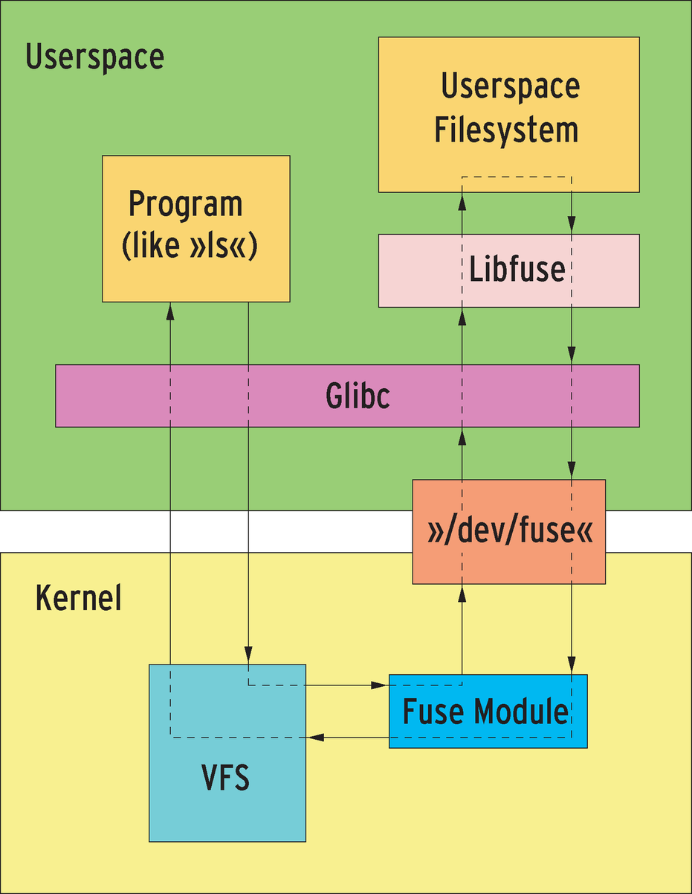

FUSE介绍
Contents
本文介绍了FUSE（用户态文件系统），和其相应的编程库libfuse，并给出了示例程序。
FUSE 概述
FUSE（用户态文件系统）是一个实现在用户空间的文件系统框架，通过FUSE内核模块的支持，使用者只需要根据fuse提供的接口实现具体的文件操作就可以实现一个文件系统。
在fuse出现以前，Linux中的文件系统都是完全实现在内核态，编写一个特定功能的文件系统，不管是代码编写还是调试都不太方便，就算是仅仅在现有传统文件系统上添加一个小小的功能，因为是在内核中实现仍需要做很大的工作量。在用户态文件系统FUSE出现后(2.6内核以后都支持fuse)，就会大大的减少工作量，也会很方便的进行调试。编写FUSE文件系统时，只需要内核加载了fuse内核模块即可，不需要重新编译内核。
FUSE 特点
- 用户空间文件系统——类Unix OS的框架
- 允许非超户在用户空间开发文件系统
- 内核的API接口，使用fs-type操作
- 支持多种编程语言（ c、c++、perl、java 等）
- 普通用户也可以挂载FUSE
- 不用重新编译内核
FUSE组成
fuse主要由三部分组成：FUSE内核模块、用户空间库libfuse以及挂载工具fusermount。
- fuse内核模块：实现了和VFS的对接，实现了一个能被用户空间进程打开的设备，当VFS发来文件操作请求之后，将请求转化为特定格式，并通过设备传递给用户空间进程，用户空间进程在处理完请求后，将结果返回给fuse内核模块，内核模块再将其还原为Linux kernel需要的格式，并返回给VFS；
- fuse库libfuse：负责和内核空间通信，接收来自/dev/fuse的请求，并将其转化为一系列的函数调用，将结果写回到/dev/fuse；提供的函数可以对fuse文件系统进行挂载卸载、从linux内核读取请求以及发送响应到内核。libfuse提供了两个APIs：一个“high-level”同步API 和一个“low-level” 异步API 。这两种API 都从内核接收请求传递到主程序（fuse_main函数），主程序使用相应的回调函数进行处理。当使用high-level API时，回调函数使用文件名（file names）和路径（paths）工作，而不是索引节点inodes，回调函数返回时也就是一个请求处理的完成。使用low-level API 时，回调函数必须使用索引节点inode工作，响应发送必须显示的使用一套单独的API函数。
- 挂载工具：实现对用户态文件系统的挂载
其工作原理可以用如下图表示：

libfuse
libfuse的仓库地址为：https://github.com/libfuse/libfuse
libfuse的简单示例
刚才上面提到了两个API，一个high-level API，一个是low-level API，libfuse 提供了两个示例程序：
- High-Level API example: https://github.com/libfuse/libfuse/blob/fuse_2_9_bugfix/example/hello.c
- Low-Level API example: https://github.com/libfuse/libfuse/blob/fuse_2_9_bugfix/example/hello_ll.c
这里学习了解一下High-Level:
/*
FUSE: Filesystem in Userspace
Copyright (C) 2001-2007 Miklos Szeredi <miklos@szeredi.hu>
This program can be distributed under the terms of the GNU GPL.
See the file COPYING.
gcc -Wall hello.c `pkg-config fuse --cflags --libs` -o hello
*/
#define FUSE_USE_VERSION 26
#include <fuse.h>
#include <stdio.h>
#include <string.h>
#include <errno.h>
#include <fcntl.h>
static const char *hello_str = "Hello World!\n";
static const char *hello_path = "/hello";
static int hello_getattr(const char *path, struct stat *stbuf)
{
int res = 0;
memset(stbuf, 0, sizeof(struct stat));
if (strcmp(path, "/") == 0) {
stbuf->st_mode = S_IFDIR | 0755;
stbuf->st_nlink = 2;
} else if (strcmp(path, hello_path) == 0) {
stbuf->st_mode = S_IFREG | 0444;
stbuf->st_nlink = 1;
stbuf->st_size = strlen(hello_str);
} else
res = -ENOENT;
return res;
}
static int hello_readdir(const char *path, void *buf, fuse_fill_dir_t filler,
off_t offset, struct fuse_file_info *fi)
{
(void) offset;
(void) fi;
if (strcmp(path, "/") != 0)
return -ENOENT;
filler(buf, ".", NULL, 0);
filler(buf, "..", NULL, 0);
filler(buf, hello_path + 1, NULL, 0);
return 0;
}
static int hello_open(const char *path, struct fuse_file_info *fi)
{
if (strcmp(path, hello_path) != 0)
return -ENOENT;
if ((fi->flags & 3) != O_RDONLY)
return -EACCES;
return 0;
}
static int hello_read(const char *path, char *buf, size_t size, off_t offset,
struct fuse_file_info *fi)
{
size_t len;
(void) fi;
if(strcmp(path, hello_path) != 0)
return -ENOENT;
len = strlen(hello_str);
if (offset < len) {
if (offset + size > len)
size = len - offset;
memcpy(buf, hello_str + offset, size);
} else
size = 0;
return size;
}
static struct fuse_operations hello_oper = {
.getattr = hello_getattr,
.readdir = hello_readdir,
.open = hello_open,
.read = hello_read,
};
int main(int argc, char *argv[])
{
return fuse_main(argc, argv, &hello_oper, NULL);
}
编译
# gcc -Wall hello.c `pkg-config fuse --cflags --libs` -o hello
运行示例
~/work/libfuse # mkdir mnt
~/work/libfuse # ./hello mnt/
~/work/libfuse # cd mnt/
~/work/libfuse/mnt # ls
hello
~/work/libfuse/mnt # ls -al
total 4
drwxr-xr-x 2 root root 0 Jan 1 1970 .
drwxr-xr-x 3 root root 4096 Sep 15 20:44 ..
-r--r--r-- 1 root root 13 Jan 1 1970 hello
~/work/libfuse/mnt # cat hello
Hello World!
~/work/libfuse/mnt # touch hello1
touch: cannot touch ‘hello1’: Function not implemented
~/work/libfuse/mnt # mkdir test1
mkdir: cannot create directory ‘test1’: Function not implemented
~/work/libfuse/mnt # cd ..
~/work/libfuse # fusermount -u mnt/
{kind=link}